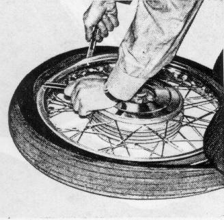
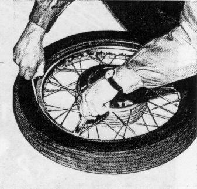
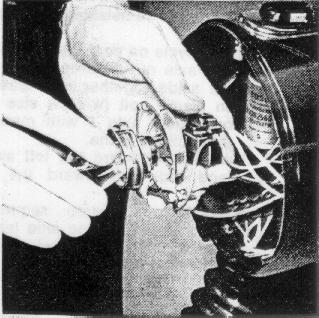
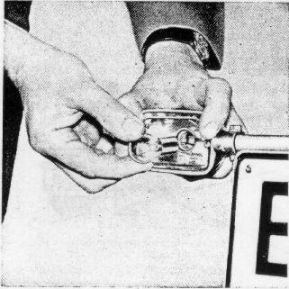
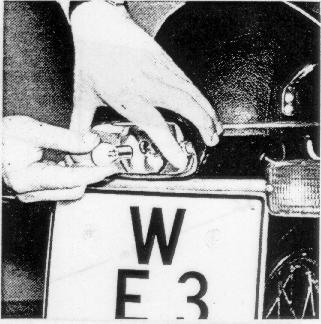
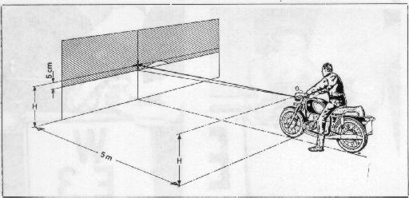

Removing and reinstalling the front wheel

Removing and reinstalling the rear wheel
Tire Changing
To remove
the tire, deflate, push the tire from the rim inward.
Unscrew valve nut, push valve into tire.
Observe the safty notches in the rim.
Push the tire bead into the rim well on the side opposite the safety notches
and start lifting the bead off the rim on the side of the safety notches
with the tire irons.
Remove tube and completely remove tire from wheel in the same manner.
Figure 57
57

To mount
the tire, push the tire bead into the rim well on the side opposite
the safety notches; the red point of the tire should be in height of the valve.
Lift the tire over the rim flange step by step, without using force,
and uniformly on both sides with the help of the tire irons,
apply talcum powder.
Insert tube and secure valve with the lock nut;
do not tighten lock nut; turn it on 4-5 turns;
inflate slightly.
Push the second bead of the tire over the rim into the rim well,
again first on the side opposite safety notches;
in doing so, the valve must be pushed back until the safety
nut makes contact.
Proceed to push the tire bead over the rim flange with the tire irons.
Inflate tire, make certain that the check line has an equal
distance from the rim edge over its entire circumference on both sides.
Balance tire.
Figure 58
58

Head Light Bulbs, Bulbs for Control
Lights, Speedometer Lighting, and
Turn Signals should be replaced as follows
Use screw driver to pry the headlight rim off the head light.
Remove bulb holder from reflector.
To remove bulb from holder, push it in and twist and then withdraw.
When refitting the bulb holder take care that the locating tab
of the holder lines up with the recess on the reflector.
Figure 59
59

Remove the parking light bulb from the reflector through
the bulb holder opening.
Do not touch the reflector surface.
All sockets for the control lights and the speedometer lighting
can be withdrawn from their receptacles.
The bulbs can be removed by pushing them into the socket
while simultaneously turning them to the left.
Caution! The charging indicator light
(red) must be lit when the ignition switch is switched on.
The charging of the battery during operation depends upon
the charging control light working properly;
use only a 12 V 4 W bulb.
Pull flasher from its socket.
When reassembling, place head light insert into the top
of the edge of the head light housing,
push it against the head light housing at the bottom making
certain that the locating tab is properly positioned.
Ascertain that the holding springs are fully engaged.
Disassembly of turn signals and tail/stop light
The turn signal lens and tail light lens can be removed after
the two philips-head screws have been removed.
The turn signal and tail light bulbs are removed by pushing
them in and simultaneously turning them to the left.
Figures 60 and 61
60

61

Observe the marking "top" when reinstalling the turn signal lens. Make certain that the clear portion of the tail light lens faces down.
Head Light Adjustment
Check the pressure and correct, if necessary.
Place motorcycle on its wheels with the rider aboard
on a level surface 161/2 feet
from a light-colored wall.
The rear springs should be set for solo operation.
Measure distance from ground to head light center,
mark this distance on the wall with a cross and draw
another cross 2" below the first one.
Switch on low beam and align the head light,
so that the bright-dark boundary runs from the left,
from the center of the lower cross, rising to the right
to the horizontal line of the upper cross
(161/2 feet)
and then falls off.
Figure 62
62
